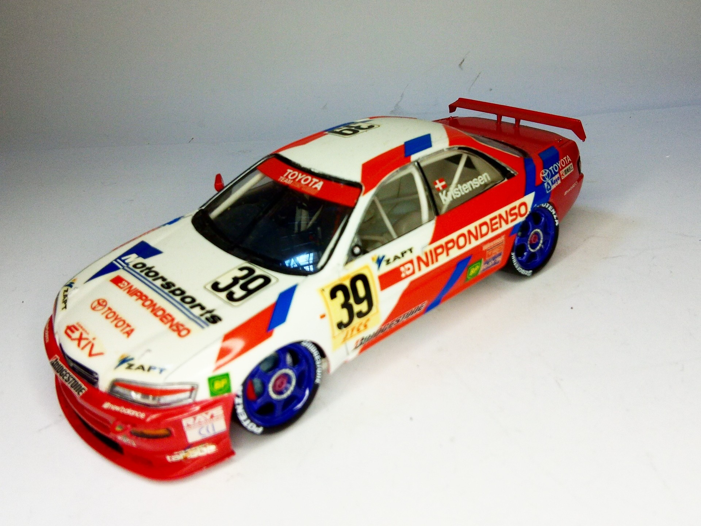
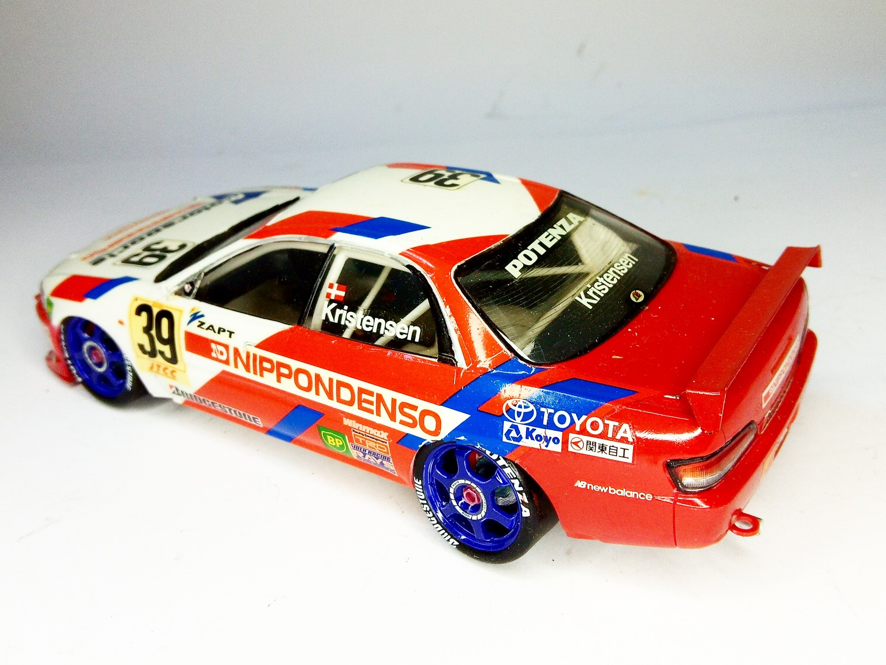
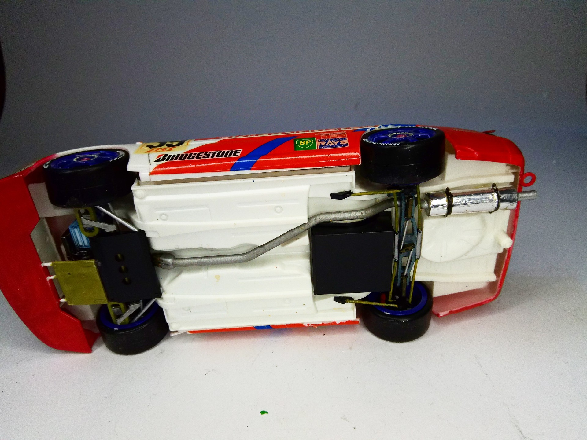

Auto e veicoli stradali · scale model archive
Toyota Cerumo EXIV JTCC
Toyota Cerumo EXIV JTCC — Kit: Tamiya, Scale: 1/24. As raced in JTCC 1995 #1/24 #Tamiya #Toyota #EXIV

Photo gallery


English description
As raced in JTCC 1995
#1/24 #Tamiya #Toyota #EXIV
Descrizione italiana
Come corse nel JTCC 1995.